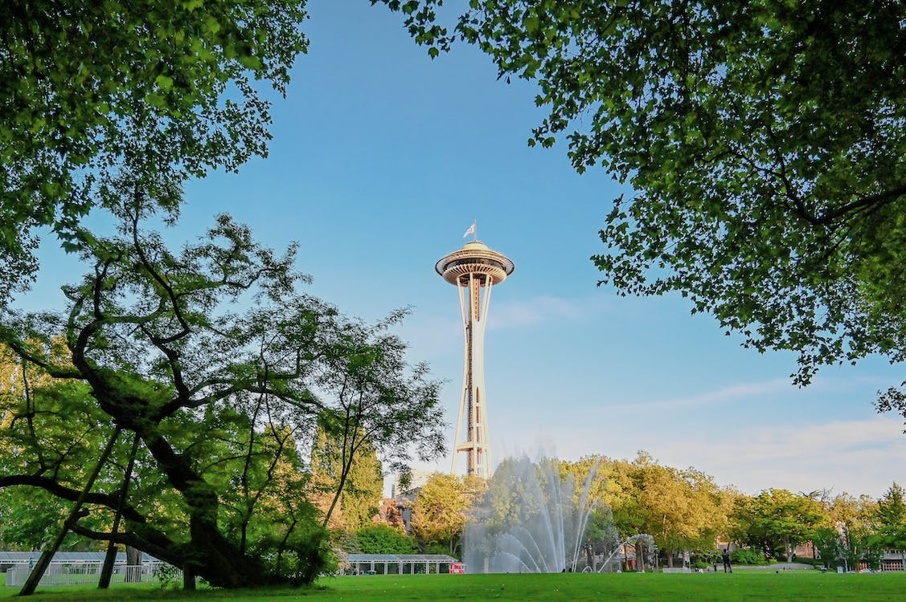

The Space Needle
About Seattle
Located in the North Puget Sound region of Washington State, Seattle was officially incorporated on December 2, 1869 (Government of Seattle, n.d.). Since then, the city has grown into a sprawling urban area with a population growing greatly to a huge sum of about 750,000 (Washington Cities by population, n.d.) people as of 2022.
Places to visit in Seattle
- The Space Needle
- Pike Place Market
- The Seattle Aquarium
- The Washington State Ferries